Программа курса
Курс потока
Основы патопсихологии взрослого и детского возрастов
Сейчас: Расстройства психотического спектра
Продолжим с 41:27
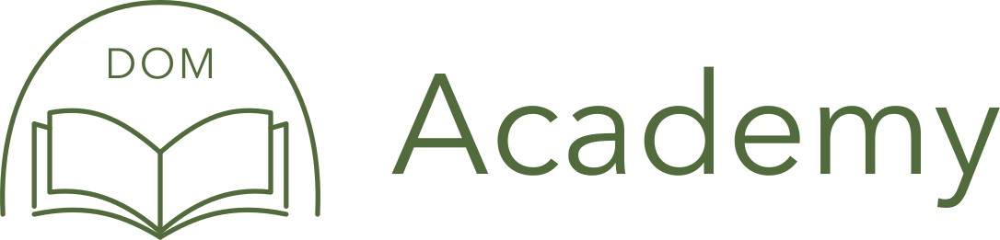
DOM Academy — образовательная и исследовательская площадка в экосистеме DOM. Здесь можно узнать о самом проекте, команде, истории, программах, офлайн-центре и партнёрах.
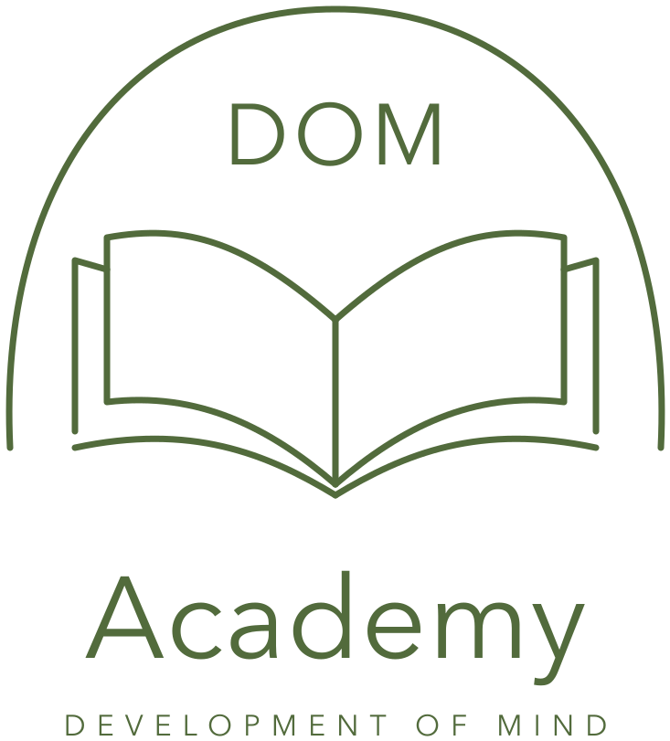
/aboutРедактировать страницуОнлайн-пространство для изучения психологии: курсы с транскриптами, AI-помощник по лекциям и книгам, таймлайн жизни, таблица по расстройствам, конспекты, тесты и лента группы. Коротко о каждой возможности — и как ей пользоваться.
«Не просто набор программ, а среда, в которой человек постепенно ищет собственный путь в профессии»
Одна кнопка для всех: если вы здесь впервые, аккаунт создастся автоматически.
Нажимая «Войти через Google», вы соглашаетесь с условиями использования.
Образовательная платформа по психологии и смежным областям. Курсы, инструменты для самостоятельной работы и научный поиск.
Открытые курсы можно смотреть без регистрации.
DOM Academy — образовательная среда для тех, кто изучает психологию и развивает собственную практику. Проект вырос из психологического центра и профессионального сообщества DOM в Тбилиси, поэтому здесь обучение связано с живым опытом, встречами и обменом.
Академию делают Иракли Кобалия, Алексей Зыков и Анастасия Вологжанина. Для команды это «не просто набор программ, а среда, в которой человек постепенно ищет собственный путь в профессии».
Прийти студентом, изучать разные подходы и постепенно начинать практику.
Становиться специалистом, супервизором или преподавателем — без единственной обязательной траектории.
Запускать группы, проекты и события, которые помогают менять что-то вокруг.
Откройте курс, чтобы посмотреть программу. Курсы с отметкой «Открытый доступ» можно смотреть без регистрации.
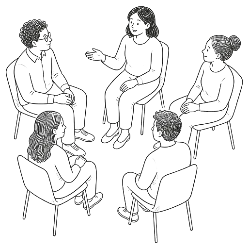
Открытый доступОткрытая видеолекция «Границы группы».
Смотреть сейчас →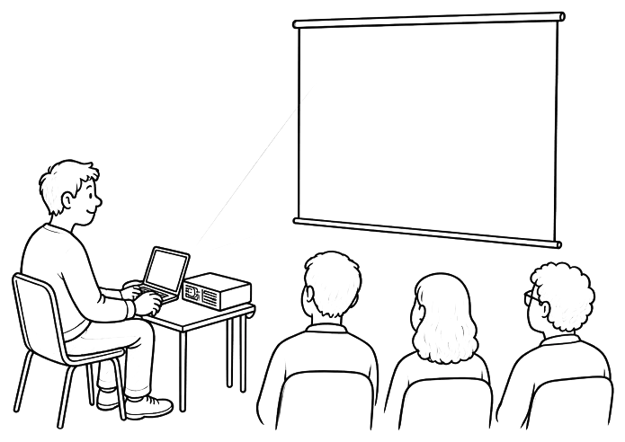
Открытый доступЛекции АНО ДПОЛекции и интервью: обида, вина, стыд, шоковая триада.
Смотреть сейчас →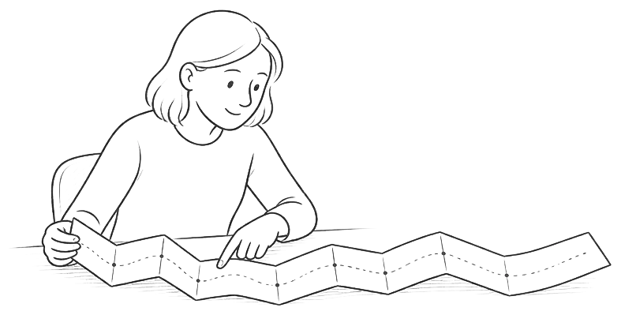
Весь жизненный путь — от периода до рождения до завершения жизни.
Посмотреть программу →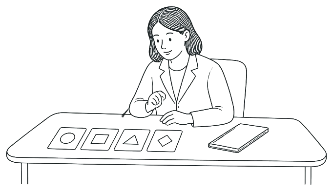
От предмета и методов до расстройств личности, настроения и мышления.
Посмотреть программу →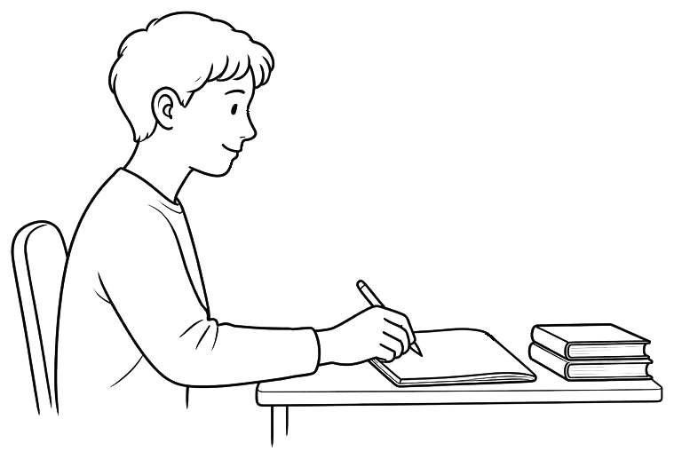
Познавательные процессы, эмоции, мотивация и воля.
Посмотреть программу →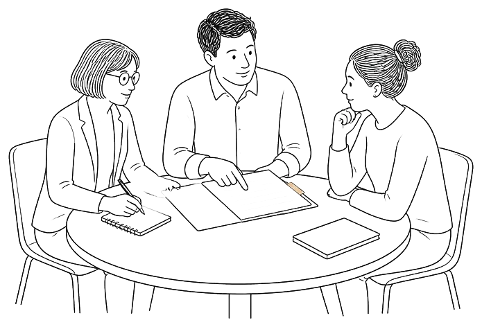
Нервная система, первые шаги в нейропсихологии и психиатрии.
Посмотреть программу →Платформа становится рабочим пространством: лекция, конспект, личный опыт и проверка знаний связаны между собой.
Все возможности платформы →Смотрите лекцию и фиксируйте мысли рядом с видео. Конспект сохраняется автоматически и остаётся привязанным к курсу.
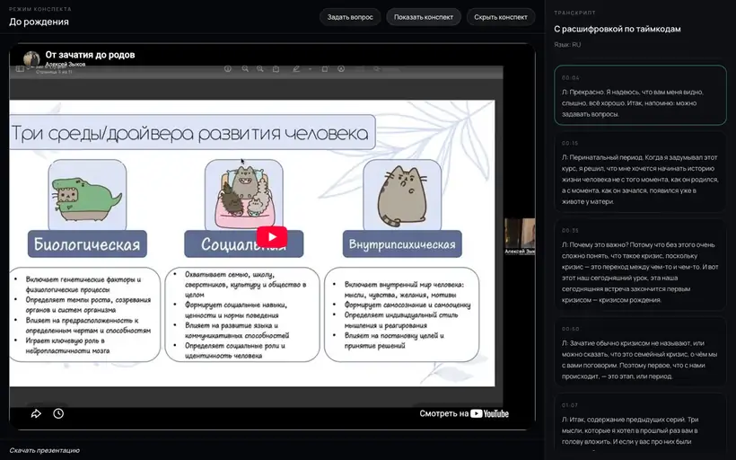
Лучший результат и история попыток сохраняются у каждого теста, а за учёбу вы получаете наклейки. Дополняют обучение AI-помощник, вопросы к семинарам и научный поиск.
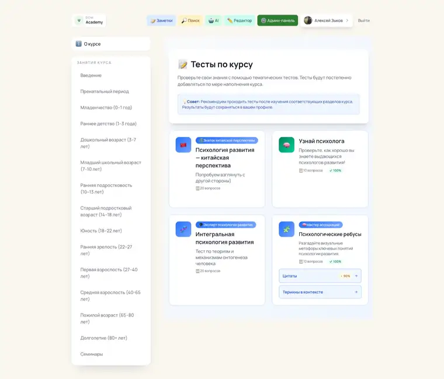
Собирайте жизненный путь на интерактивном холсте: события, возрастные периоды, сферы жизни и развилки становятся видимой картой.
Зарегистрироваться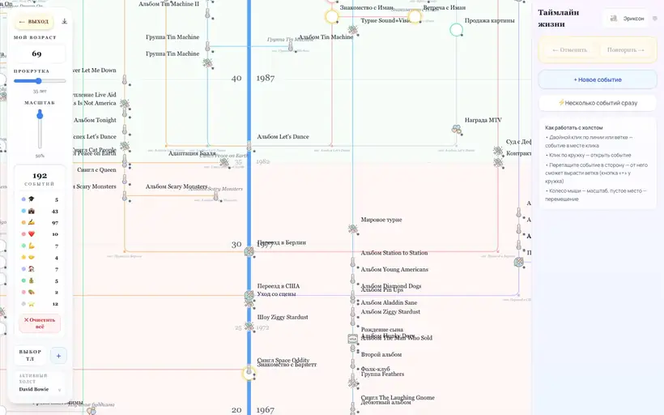
Задавайте вопросы по лекциям и книгам курса — ответ придёт со ссылками на таймкоды и страницы. Научные статьи ищутся в OpenAlex, OpenAIRE и Semantic Scholar.
AI работает через ваш личный ключ Google Gemini. Он бесплатный и подключается в профиле за минуту — без него AI-помощник не отвечает.
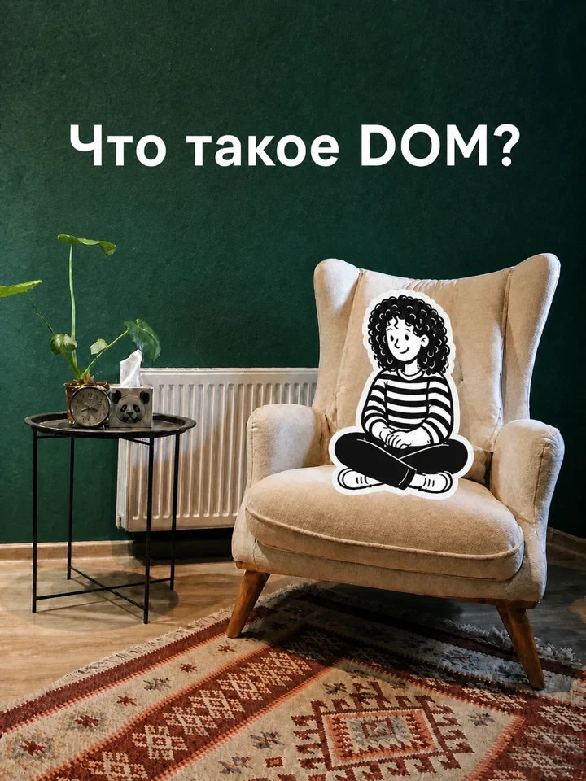
Три кабинета — Лазурный, Бордовый и Изумрудный — для консультаций и небольших групп, а также зал для лекций, практикумов и мастер-классов.
Регистрация занимает минуту — через Google. Открытые курсы доступны сразу, курсы вашего потока подключит администратор.
Проверьте интернет и обновите страницу. Если ошибка повторяется, напишите нам — мы разберёмся.
Продолжайте с того места, где остановились.
Сейчас: Расстройства психотического спектра
Продолжим с 41:27
Сейчас: Память. Часть 1: Классика и конструкции
5 из 15 занятий завершено
Выберите курсы, которые сейчас активно проходите, — они будут показаны здесь.
Выбрать курсы в профилеЗаметки, тесты, таймлайн, поиск по лекциям и AI-помощник.
Возможности платформыУ вас пока нет доступа к курсам DOM Academy. Ниже — что открыто уже сейчас и как получить доступ к закрытым курсам.
Эти курсы можно смотреть целиком без оплаты.
Открытый доступГрупповая психотерапияТеории и практика работы с группой · 9 лекцийСмотреть сейчас →Откройте курс, чтобы увидеть его программу и преподавателей. Для просмотра лекций нужен доступ — запросите его в блоке справа.
Понимание и помощь человеку в контексте возраста: весь жизненный путь — от периода до рождения до старения и завершения жизни.
Записи на этот курс сейчас нет. Доступ выдаёт администратор.
Смотреть бесплатно ЗаписатьсяДля макета. Такой блок есть только у двух курсов: у «Психологии развития» — «Таймлайн жизни», у «Основ патопсихологии» — «Таблица по расстройствам».
«Понимание и помощь человеку в контексте возраста» — программа повышения квалификации по психологии развития для психологов и специалистов помогающих профессий.
За три месяца мы проходим весь жизненный путь человека: от периода до рождения — через детство, подростковый возраст и взрослость — к старению и завершению жизни. Идея программы простая: один и тот же запрос звучит по-разному в 15, 35 и 70 лет. Чтобы понять человека и помочь ему, нужно видеть, в какой точке пути он находится, какие задачи решает и как прошёл предыдущие этапы.
Психологам-консультантам и психотерапевтам, педагогам-психологам, педагогам и тьюторам, врачам-психиатрам, социальным работникам и другим помогающим специалистам, а также студентам старших курсов психологических и педагогических направлений. Для зачисления нужно иметь или получать среднее профессиональное либо высшее образование.
Формат близок к «перевёрнутому классу»: теорию вы смотрите заранее в записи, а живые встречи посвящены обсуждению и практике.
После итоговой аттестации вы получите удостоверение о повышении квалификации установленного образца. Обучение проводит АНО ДПО «Экзистенциально-гуманистическое образование» на основании образовательной лицензии.
Программа идёт от начала жизни к её завершению: вступительный блок и три блока по возрастам. Возрастные границы в названиях тем — ориентиры для систематизации, а не жёсткие рамки.
Вступительный блок. Как устроена программа и что такое развитие: возрастная норма; календарный, психологический и социальный возраст; принципы периодизации; влияние среды и отношений.
В конце программы участники готовят письменную работу в одном из форматов на выбор — например, небольшое исследование, разбор опыта одного-двух человек или наблюдение за собственным опытом — и коротко обсуждают её на итоговом собеседовании. Личное самораскрытие не обязательно: рефлексивную работу можно сдать в обезличенной форме.
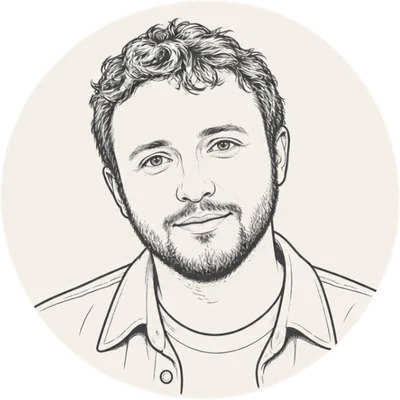
Психолог-консультант и супервизор. Консультирует индивидуально, ведёт психологические группы, работает с детьми, подростками и взрослыми, обучает и супервизирует специалистов. На программе ведёт видеолекции и семинары по четвергам.
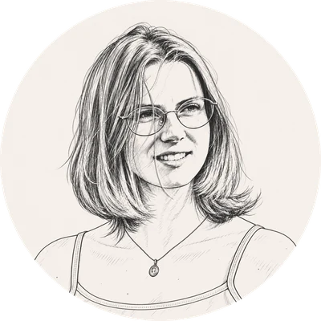
Педагог-психолог, педагог дополнительного образования. Работала с детьми с СДВГ, организовывала детские и подростковые программы и сообщества, вела ролевые игры, семинары и тренинги для педагогов.
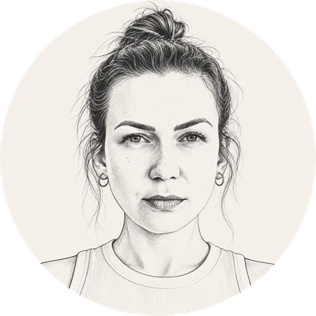
Психолог-консультант, преподаватель психологии. Ведёт индивидуальную и парную практику в интегративном подходе, курирует студентов программы переподготовки «Психолог-консультант».
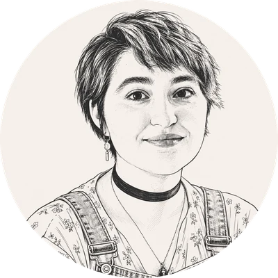
Психолог-консультант, клинический психолог. Ведёт частную практику со взрослыми, детьми и подростками, вела психологические группы, курирует студентов программы переподготовки «Психолог-консультант».
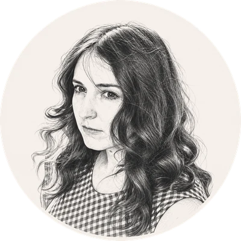
Психолог и супервизор. Работала педагогом-психологом с дошкольниками и школьниками, консультировала детей, подростков и семьи, руководила выездными психологическими программами, обучала и супервизировала психологов и педагогов. На программе помогает с организацией, учебными материалами и поддержкой участников.
Вопросы — в Telegram @PsychologistAnya или на почту yorkanny1388@gmail.com
Вопросы вашей группы по этому занятию. Ведущий разберёт их на семинаре.
Проходите тест после занятия. Лучший результат и история попыток сохраняются у каждого теста.
Отвечает только на вопросы по психологии и показывает, откуда взят ответ.
AI-помощник работает через ваш личный ключ Google Gemini. Он бесплатный, подключение занимает минуту, а лимита хватает с большим запасом.
Подключить в профилеВопросы и ответы сохраняются в вашей истории поиска. Проверяйте важное по первоисточнику.
Здесь будут ваши курсы на главной, ключ Gemini для AI-помощника, история поиска и наклейки. Вход — через аккаунт Google, регистрация не нужна.
Личные данные и настройки обучения
Имя и фото приходят из вашего аккаунта Google.
Эти курсы показываются первыми в блоке «Продолжить».
Быстрый статус важных параметров.
До трёх курсов, которые вы сейчас проходите. Они показываются первыми на главной в блоке «Продолжить».
AI-помощник, поиск по книгам, объяснение фрагментов лекций и AI-черновики в редакторе курса работают только с вашим личным ключом Google Gemini.
Ваши запросы в поиске по сайту и статьям, к AI-помощнику и по книгам. Другие студенты их не видят.
Наклейки за учёбу — личные и групповые. Без рейтингов: только ваш собственный путь.
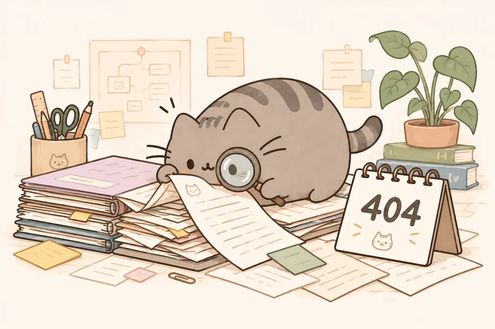
Утверждённая версия: книга с двумя страницами, «DOM» внутри арки, девиз «Development of Mind». Цвет эмблемы #526B3C, шрифт Manrope.
Рисованные иконки и пастельные цвета кнопок. «Редактор» видят только администраторы, кнопки «Войти» после входа нет.
Линейные рисунки на пастельном фоне. Каждому курсу — свой цвет подложки; новые курсы получают нейтральную обложку.
Цвета из дизайн-кода сайта, которые используются на всех экранах макета.
Фон#FAF7F0
Текст#111827
Заголовки#24384B
Кнопки#2E7D32
Акцентный текст#56724A
Шалфей · Обучение#E8ECD9
Жёлтый · Поиск#FFF3B0
Сиреневый · AI#ECE4F0
Розовый · Редактор#F0D7CF
Охра · материалы#F5E7BD
Мятный · профиль#E8F5E9
Небесный#DFE9F1
Enter — закрыть абзац, Shift+Enter — перенос строки. Таймкод ставится по первой букве абзаца.